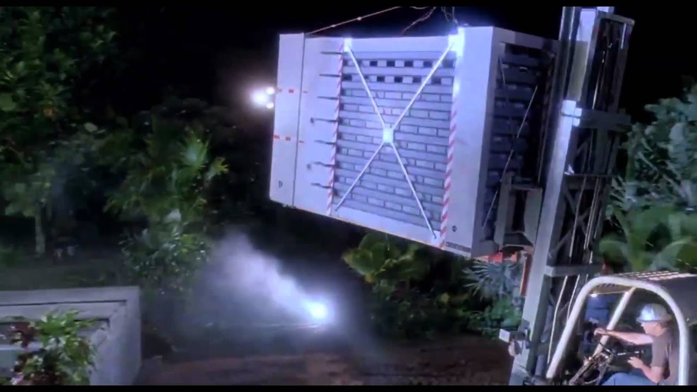

L'inizio del film e il coinvolgimento dello spettatore
Come si cattura l'attenzione di chi guarda? Ogni film deve decidere come "entrare" nella storia. Esistono due approcci principali: l'inizio forte e d'azione o quello calmo e misterioso. Bordwell cita l'apertura di Jurassic Park: una scena tesa e violenta dove sentiamo il pericolo senza vedere il dinosauro. Questo inizio "spaventoso" serve a creare una tensione che durerà per tutta l'ora successiva, anche quando i personaggi sembrano al sicuro.
Al contrario, Incontri ravvicinati del terzo tipo sceglie un inizio lento. Non c'è violenza, ma mistero: scienziati che trovano aerei scomparsi nel deserto. In entrambi i casi, il regista sta preparando la nostra mente. Questi inizi non sono casuali, ma sono le fondamenta della Forma del film: preparano lo spettatore a ciò che verrà, creando uno stato d'animo specifico.
